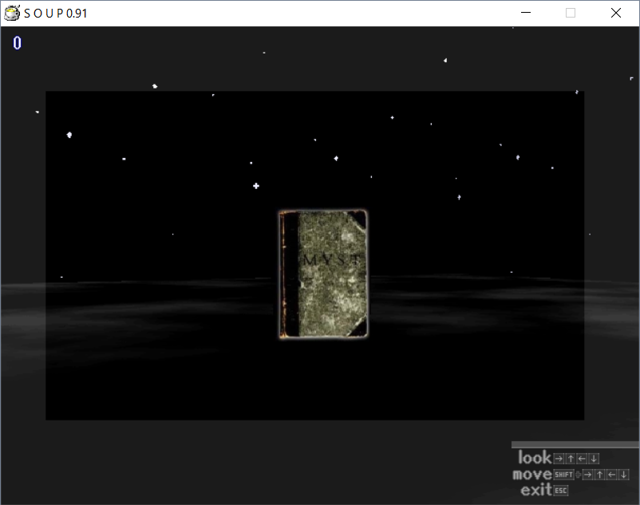
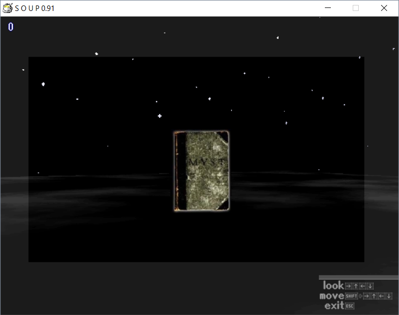

Soup Soup is a mod for Soup 0.9, made by a group of people led by Kite Line. It was released on October 4th, 2022.
The mod is a little bit more creepier and unsettling than the original game, with some humor and references put into the mixture.
Internally, most of the files' names have not changed. However, there is a separate document named "soapsoup", in a similar fashion to the original "soup" and "soup.en" documents which remain untouched. The save data is set as 777 by default, so you already get access to the Day Select.
Some differences include Days being named Nights and the rooms having official names, listed in "soapsoup" document mentioned above.
• Kite Line - Lead Developer
• Agent-RedJackal - Created 1F West (Night 2), also made VineRooms and Rooms Of The Room Rooms
• Amon26 - Created The Room of Ashes (Night 5)
• Ivan Zanotti - Created Leia's Ghost (Night 5)
• lazugod - Created Simultanea (Night 4), Co-created NOT ART (Night 4)
• Nikki Kalpa - Created Worm Den (Night 3)
• Quinn K. - Created The Thicket of the Cities (Night 3)
• Raku - Created Sun Artifact (Night 1), Co-created The Living Room (Night 3), Moon Child (Night 5) and Satyr and Faun (Night 5)
• Pheener - Created Music and Sound Effects for the game
Below is a video of Rufure playing Soap Soup.

 
